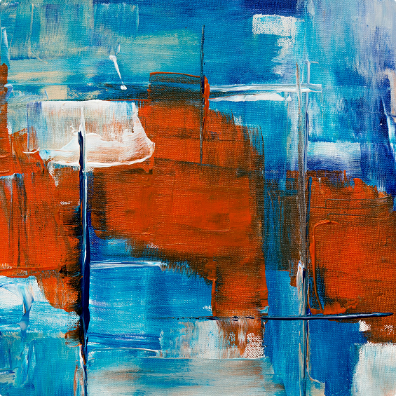

I'm Sarah Chen, design student and explorer of visual languages. I'm passionate about understanding how
different design disciplines intersect and create meaningful connections.
Design
Yoga studio rebrand
Artwork
Abstract paintings

Design
Magazine study
Photography
Echoes of Italy
Design
Castro Capital branding
I'm dedicated to crafting meaningful visual experiences through a multidisciplinary design approach.